For elliptic sections, by equation (7.68), the profile
of the vertical component of velocity in the plane of spanwise symmetry,
| 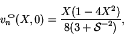 | (7.77) |
| 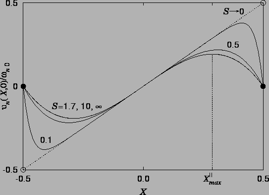 |
According to Theorem 3 (p.  ),
if a flow has zero
gradient in some direction, then the component of velocity in that direction is
constant along vortex-lines. The flow given by 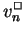,
(7.25) or (7.28),
falls under the hypothesis of this theorem, having no gradient in the
vertical direction. If there exists an isolated maximum, then, of
in a section,
there can be no projection in the section of a
vortex-line through this
point, otherwise the other points on the projection of the
vortex-line would have the same
velocity as at the maximum and the maximum would not be isolated. Thus,
isolated maxima of can only occur at points where the
horizontal components of vorticity vanish.
),
if a flow has zero
gradient in some direction, then the component of velocity in that direction is
constant along vortex-lines. The flow given by 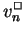,
(7.25) or (7.28),
falls under the hypothesis of this theorem, having no gradient in the
vertical direction. If there exists an isolated maximum, then, of
in a section,
there can be no projection in the section of a
vortex-line through this
point, otherwise the other points on the projection of the
vortex-line would have the same
velocity as at the maximum and the maximum would not be isolated. Thus,
isolated maxima of can only occur at points where the
horizontal components of vorticity vanish.
The buoyancy-induced vorticity in a rectangular section is, from
(7.28) and (7.71):
| 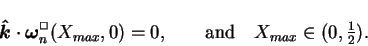 | (7.79) |
The limiting behaviour of for large and small values of  can be obtained from the Jones-Furry (7.24) and Hele-Shaw
(7.27) limiting vorticity profiles as:
can be obtained from the Jones-Furry (7.24) and Hele-Shaw
(7.27) limiting vorticity profiles as:
For general  , may be found by bisection
(Kahaner, Moler & Nash 1989, p. 240)
on the line interval
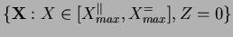;
higher order methods, such as
Newton-Raphson, being unsuitable since
the vorticity is almost independent of
, may be found by bisection
(Kahaner, Moler & Nash 1989, p. 240)
on the line interval
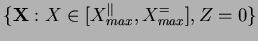;
higher order methods, such as
Newton-Raphson, being unsuitable since
the vorticity is almost independent of  except near the hot wall if
except near the hot wall if  is small. For very small
is small. For very small  the representation (7.54)
of the velocity profile developed in
§7.4.1 is more appropriate; so much more so, in fact,
that only the Hele-Shaw form and the first term of the
series are required to give three figure accuracy in for
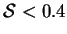. This leads to the approximation for the vorticity field:
the representation (7.54)
of the velocity profile developed in
§7.4.1 is more appropriate; so much more so, in fact,
that only the Hele-Shaw form and the first term of the
series are required to give three figure accuracy in for
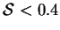. This leads to the approximation for the vorticity field:
| 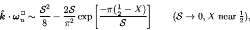 | (7.82) |
For large  , (7.80) may be extended by taking the
Jones-Furry form and the first term of the series in (7.25).
The approximate spanwise vorticity in the plane is then:
, (7.80) may be extended by taking the
Jones-Furry form and the first term of the series in (7.25).
The approximate spanwise vorticity in the plane is then:
| 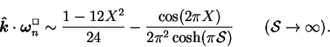 | (7.84) |
The various estimates; (7.80), (7.81), (7.83) and (7.85); of , along with the root found by bisection of (7.78), are plotted in figure 7.9
| 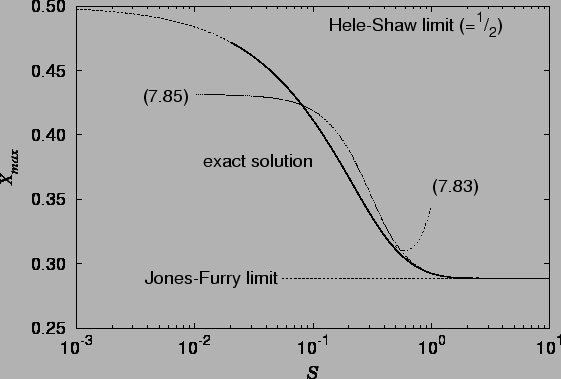 |
Figure 7.9 again confirms that for 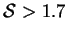, the flow in the plane of spanwise symmetry is essentially two-dimensional.
The behaviour of the location of the point of maximum vertical velocity is similar to that of the point of maximum deflection in a vertical elastic plate subjected to a hydrostatic pressure variation (Timoshenko & Woinowsky-Krieger 1959, p. 125): the point moves further from the centre as the aspect ratio (height to width, in this case) increases. These two problems are not exactly analogous, however, as the plate deflection satisfies a fourth order equation, rather than the Poisson equation (7.20). The problems become identical if the plate has no resistance to bending, and so is a uniformly stretched membrane.
![$\displaystyle 2
\left[
2\upi ^2\cos\frac{\upi }{\sqrt{3}}-\upi ^2\cosh \upi \mbox{$\mathcal S$}
\right]
\qquad(\mbox{$\mathcal S$}\rightarrow\infty)$](img983.png)